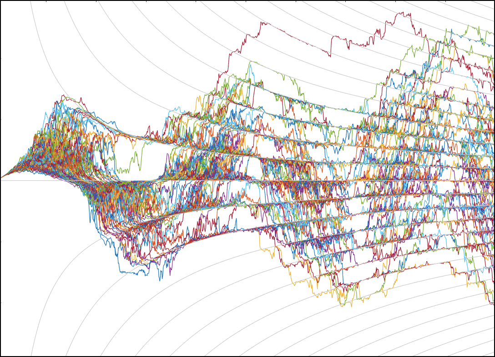
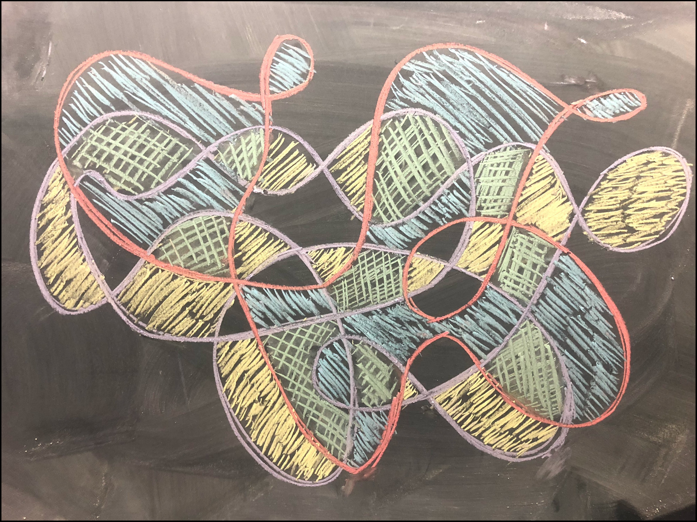

Some mathematical art that I've created or discovered during my research and musings.
An SDE Stabilizing on Hyperbolas (May 2019)
I recently found myself studying the stochastic differential equation (SDE) \(dX_t = \cos(\pi t)dt + \sin(\pi t X_t)dB_t\) with \(X_0 = 0\). While no explicit solutions exist, I predicted the following interesting qualitative behavior: The noise term should have only a weak effect on the system whenever \(\sin(\pi t X_t)\approx 0\), i.e. whenever \(X_t\approx k/t\) for \(k\in\mathbb{N}\). In other words, I expected that any sample path which goes near one of these hyperbolas should stay near the curve until a sufficiently large random force knocks it away. I came across the image above while checking this behavior computationally by simulating 1000 sample paths of solutions to the SDE using the Milstein scheme.
Simultaneous 2-Colorings of the Plane (August 2018)
In an introductory graph theory class we proved that any closed curve in the plane whose tangents have at most finitely many self-intersections gives rise to a 2-colorable partition of the plane. The image above is my chalkboard realization of 2 such curves (red and purple) and their respective colorings (blue and yellow) along with the regions colored by both (green).
Extremal Inscribed 5-stars in the 11-gon (September 2017)

In Vietoris-Rips Complexes of Regular Polygons, we proved that \(n \ge 4\ell + 2\) is a necessary and sufficient condition for every point on the boundary of the regular polygon \(P_n\) to be contained in a unique \((2\ell+1)\)-pointed star whose vertices also lie on the boundary of \(P_n\). Furthermore, we proved that the stars of maximal side length are those containing a vertex of \(P_n\) and that the stars of minimal side length are those containing a midpoint of an edge of \(P_n\). The following image realizes \(P_{11}\) (black) along with its minimal (blue) and maximal (green) inscribed 5-pointed stars.